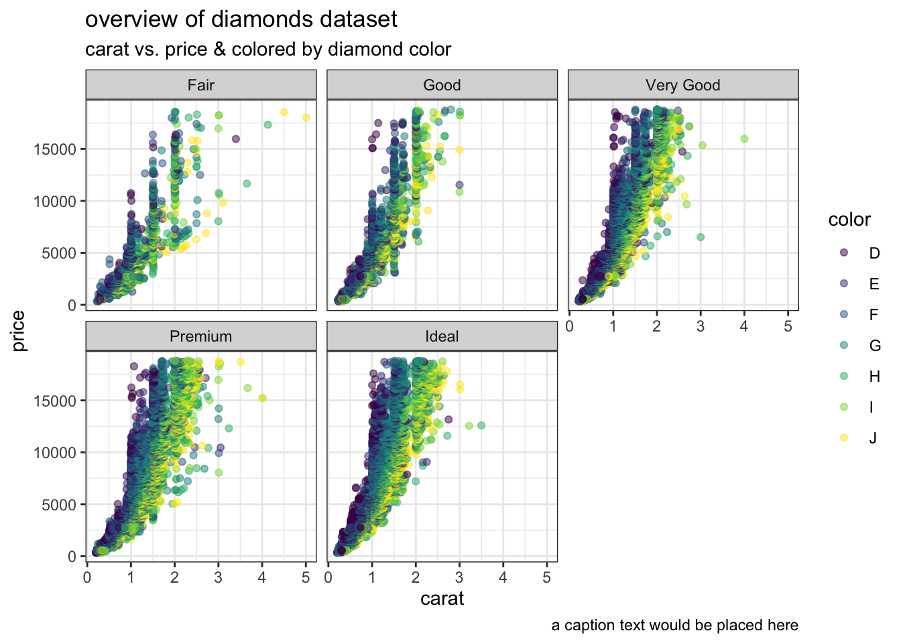
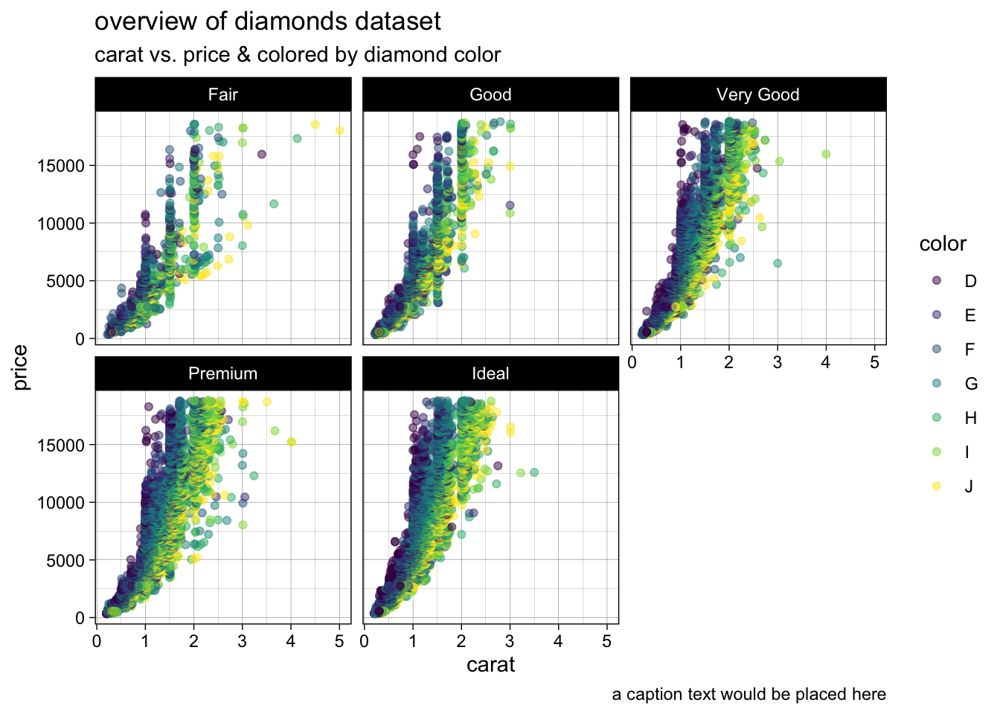
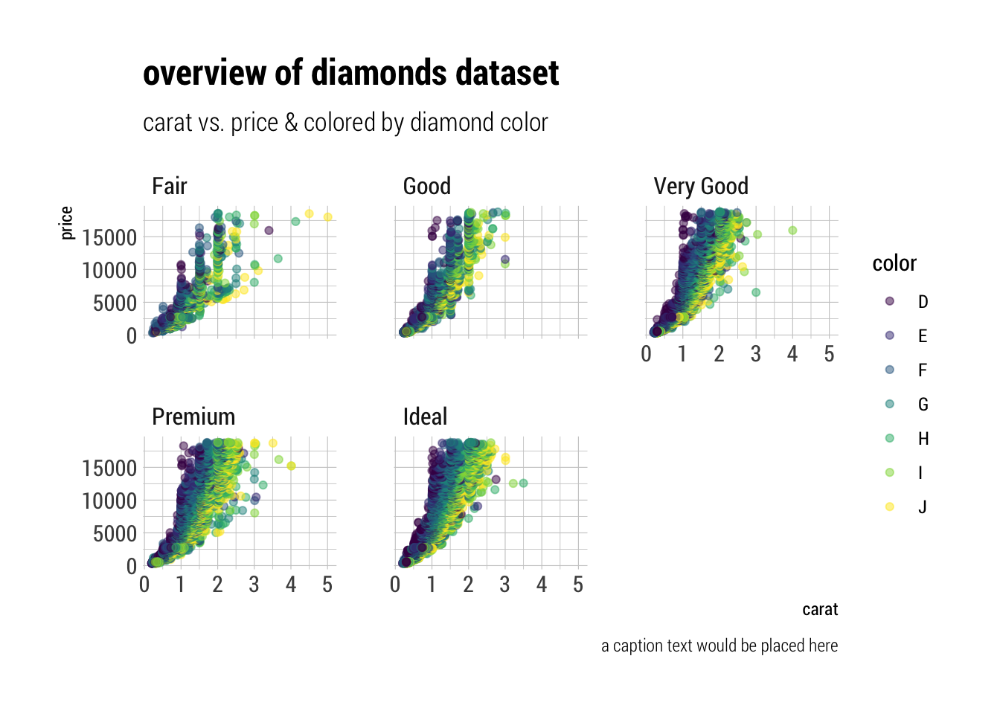

ggplot2 - elegant graphics for data analysis (part of tidyverse)
 |
ggplot2 (plotting) | ggplot2 is a system for declaratively creating graphics, based on The Grammar of Graphics. You provide the data, tell ggplot2 how to map variables to aesthetics, what graphical primitives to use, and it takes care of the details. |
ggplot2 package: It’s one of the most commonly downloaded R packages (over a million downloads in the last year!) and has influenced the design of graphics packages for other languages.
ggplot2 is an R package for producing statistical, or data, graphics, but it is unlike most other graphics packages because it has a deep underlying gram- mar. This grammar, based on the Grammar of Graphics (Grammar of Graphics (Wilkinson, Leland; 2015)).
You can find a fast and brief overview of ggplot2 at R graphics cookbook
In addition to the powerful basis of ggplot2 several (100+) extension were developed https://exts.ggplot2.tidyverse.org/gallery/
In brief, the grammar tells us that a statistical graphic is a mapping from data to aesthetic attributes (colour, shape, size) of geometric objects (points, lines, bars).
- Data
- Aesthetics or Mapping: What should be plotted on x and y-axis. group-wise: colour, fill, size, shape,line width, line type.
- Geometrics: Should a point, line, histogram, bar or
boxplot (…) be used. (
geom_...()) - Facets: data groups plot by columns and rows 4a. Scales: scale translate back and forth between variable ranges and property ranges (numbers >> position; log-scaled or discrete)
- Statistics: data binning, smoothing (e.g. loess fit), …
- Coordinates: fixed, polar, set limits, do coord. cartesian
- Themes: use Plot themes

grammar of graphics
esquisse package
esquisse means draft. And that is what this package does in perfection for beginners.
The purpose of this add-in is to let you explore your data quickly to extract the information they hold. You can create visualization with {ggplot2}, filter data with {dplyr} and retrieve generated code. This addin allows you to interactively explore your data by visualizing it with the ggplot2 package. It allows you to draw bar plots, curves, scatter plots, histograms, boxplot and sf objects, then export the graph or retrieve the code to reproduce the graph.
get started with esquisse: https://cran.r-project.org/web/packages/esquisse/vignettes/get-started.html documentation: https://dreamrs.github.io/esquisse/index.html

esquisse demo
ggplot2 - Themes
library(datasets)
library(ggplot2)
p <- ggplot(diamonds) +
geom_point(aes(x = carat, y = price, colour = color),alpha=0.5) +
facet_wrap(~cut) +
labs(title="overview of diamonds dataset",
subtitle="carat vs. price & colored by diamond color",
caption = "a caption text would be placed here" )Pay attention to the structure of this function
call: data and aesthetic mappings are supplied in
ggplot(), then layers are added on with +.
This is an important pattern, and as you learn more about ggplot2 you’ll construct increasingly sophisticated plots by adding on more types of components.
1. theme_gray()
p + theme_gray() # the default 2. theme_bw()
2. theme_bw()
p + theme_bw() 3. theme_linedraw()
p + theme_linedraw() 4. theme_light()
p + theme_light() 5. theme_dark()
5. theme_dark()
p + theme_dark() 6. theme_minimal()
6. theme_minimal()
p + theme_minimal() 7. theme_classic()
7. theme_classic()
p + theme_classic() 8. theme_void()
8. theme_void()
p + theme_void()
hrbrthemes Themes
There are also packages that add themes to ggplot like the
hrbrthemes package.
more information about the hrbrthemes package can be found here
But here are special fonts needed which are proivided in the package:
#library(hrbrthemes)
#import_plex_sans()
#import_public_sans()
#import_roboto_condensed()
#import_titillium_web()** load hrbrthemes package**
library(hrbrthemes)1. theme_ipsum()
p + theme_ipsum()
2. theme_ipsum_rc()
p + theme_ipsum_rc()
3. theme_ft_rc()
p + theme_ft_rc()